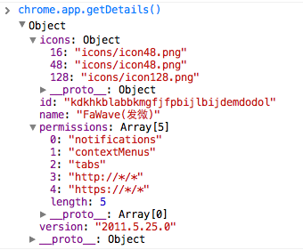

在Chrome插件上获取当前插件的版本号
问题：如何获取Chrome插件版本号
翻遍了Chrome插件开发文档，依然无法找到如何获取当前版本号。 仔细想想，版本号其实就在开发者配置的manifest.json文件上定义的，如果能读取此文件数据，就等于得到版本号信息了。
解决
没错，请求manifest.json文件，读取version数据。
var version = null;
$.get(chrome.extension.getURL('manifest.json'), function(info){
version = info.version;
}, 'json');
chrome.app.getDetails() 方法
在Console调试窗口，我发现chrome.appchrome.app.getDetails()方法 
不过此API目前无法搜索到相关文档，经测试发现只有在Chrome12以上版本才有。
有爱
^_^ 希望本文对你有用。